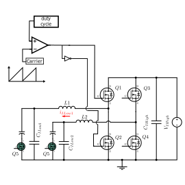
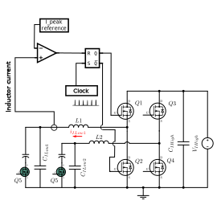
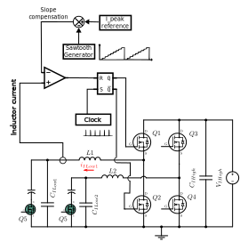
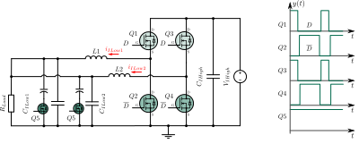
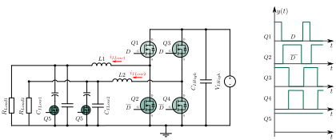
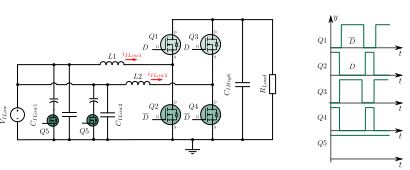
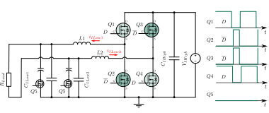

This API is designed to work with the TWIST hardware, providing a set of functions to manage and control the output power.
Features
 - Versatile Control Modes: The API supports both voltage and peak current control modes, allowing you to choose the best option for your specific application.
- Independent Leg Operation: Each of the two legs can operate independently with different topologies, such as boost or buck, offering greater flexibility in power management.
- Configure different paramaters for power electronics (dead time, phase shift)
- Simplified ADC value retrieval
- Refer to TWIST hardware specifications for more detail on TWIST board.
- Versatile Control Modes: The API supports both voltage and peak current control modes, allowing you to choose the best option for your specific application.
- Independent Leg Operation: Each of the two legs can operate independently with different topologies, such as boost or buck, offering greater flexibility in power management.
- Configure different paramaters for power electronics (dead time, phase shift)
- Simplified ADC value retrieval
- Refer to TWIST hardware specifications for more detail on TWIST board.
Initialization sequence
Note
1. Choose the wished topology : buck, boost. You can select all the legs to be in the same topology or choose a specific configuration for each one shield.power.initBuck(ALL), shield.power.initBoost(ALL)
Optional steps
2. Set the adc decimation to divide the number of trigger event starting the adc conversion shield.power.setAdcDecim(ALL, decim)
3. Set the dead time shield.power.setDeadTime(ALL, rise_deadTime_ns, fall_deadTime_ns)
4. Set the phase shift in degree shield.power.setPhaseShift(ALL, ps_degree)
5. Enable the ADC acquisition for twist to get voltage and current measures shield.sensors.enableDefaultTwistSensors()
6. Set the duty cycle to control output voltage shield.power.setDutyCycle(ALL, duty_cycle)
7. Then start the converters shield.power.start(ALL)
1. Choose the wished topology : buck, boost shield.power.initBuck(LEG1/LEG2), shield.power.initBoost(LEG1/LEG2)
Optional steps
2. Set the adc decimation to divide the number of trigger event starting the adc conversion shield.power.setAdcDecim(LEG1/LEG2, decim)
3. Set the dead time shield.power.setDeadTime(LEG1/LEG2, rise_deadTime_ns, fall_deadTime_ns)
4. Set the phase shift in degree shield.power.setPhaseShift(LEG1/LEG2, ps_degree)
5. Enable the ADC acquisition for twist to get voltage and current measures shield.sensors.enableDefaultTwistSensors()
6. Set the duty cycle to control output voltage shield.power.setDutyCycle(LEG1/LEG2, duty_cycle)
7. Then start the converters shield.power.start(ALL)
1. Choose the wished topology : buck, boost. You can select all the legs to be in the same topology or choose a specific configuration for each one shield.power.initBuck(ALL, CURRENT_MODE), shield.power.initBoost(ALL)
Optional steps
2. Set the adc decimation to divide the number of trigger event starting the adc conversion shield.power.setAdcDecim(ALL, decim)
3. Set the dead time shield.power.setDeadTime(ALL, rise_deadTime_ns, fall_deadTime_ns)
4. Set the phase shift in degree shield.power.setPhaseShift(ALL, ps_degree)
5. Enable the ADC acquisition for twist to get voltage and current measures shield.sensors.enableDefaultTwistSensors()
6. Set the slope compensation to control the output currentshield.power.setSlopeCompensation(ALL, 1.4, 1.0)
7. Then start the converters shield.power.start(ALL)
Warning
Only buck topology is currently supported for current mode control.
Example
Voltage mode and Current mode
There is two different way to control the power delivered by TWIST : voltage and current mode.
Voltage mode
Voltage mode is a traditional and widely-used approach in power electronics, where the output voltage is regulated by controlling the duty cycle. The duty cycle is a crucial parameter that determines the proportion of time a switch (such as a transistor) is active during a complete switching period. By adjusting the duty cycle, you can effectively manage the power delivered to a load.
A higher duty cycle indicates that the switch remains on for a more extended period, resulting in increased power delivery to the load. Conversely, a lower duty cycle means the switch is on for a shorter duration, thereby reducing the power supplied. Consequently, the average power and voltage applied to the load can be precisely controlled by fine-tuning the duty cycle.


Current mode
In peak current mode control, we monitors the current flowing through the power switch. Once the current reaches a predetermined peak value, we promptly turns off the power switch. This mechanism helps maintain a constant output voltage by regulating the current flow.
In this setup, a clock signal determines the switching frequency and triggers the switch to close. The controller then sends a reference peak current value. When the inductor's current reaches this reference value, the switch opens.

However, using a constant peak current reference can lead to subharmonic oscillations. To prevent this issue, we employ a technique called slope compensation. Instead of a constant value, the peak current reference is a sawtooth waveform. The final schematic with slope compensation is shown below:

The sawtooth signal Slope compensation is generated with the function shield.power.setSlopeCompensation. This function sets the slope compensation based on the input parameters. for example shield.power.setSlopeCompensation(ALL, 1.4, 1.0) generates a sawtooth signal ranging from 1.4V to 1.0V. You can create a sawtooth signal between 2.048V and 0V as well.
This sawtooth signal is then compared with the ADC's current value. When selecting the sawtooth parameters, it's essential to consider the conversion of current to voltage.
On the TWIST board, a voltage value of 1.024V on the ADC corresponds to a current of 0A. The system has a gain of 100mV per ampere, meaning that for each ampere increase in current, the voltage value increases by 100 millivolts.
Snippets examples
Buck topology
2 legs with the same configuration


2 independant leg operations


shield.power.initBuck(LEG1);
shield.power.initBuck(LEG2);
shield.power.setDutyCycle(LEG1, 0.3);
shield.power.setDutyCycle(LEG2, 0.5);
shield.power.start(ALL);
Boost topology


Inverter topology


shield.power.initBuck(LEG1);
shield.power.initBoost(LEG2);
shield.power.setDutyCycle(ALL, 0.5);
shield.power.start(ALL);
Example
Check the following examples for an application : - Voltage mode buck - Current mode buck - Voltage mode boost
Class ShieldAPI
Public Static Attributes
| Type | Name |
|---|---|
| NgndHAL | ngnd Contains all the function of the NGND switch compatible with TWISTs prior to 1.4. |
| PowerAPI | power Contains all the functions to drive shield power capabilities. |
| SensorsAPI | sensors Contains all the functions to interact with shield sensors. |
Public Static Attributes Documentation
variable ngnd
variable power
variable sensors
The documentation for this class was generated from the following file docs/core/zephyr/modules/owntech_shield_api/zephyr/public_api/ShieldAPI.h
Class SensorsAPI
Public Functions
| Type | Name |
|---|---|
| float32_t | convertRawValue (sensor_t sensor_name, uint16_t raw_value) Use this function to convert values obtained using matching spin.data.get*RawValues() function to relevant unit for the data: Volts, Amperes, or Degree Celcius. |
| void | enableDefaultOwnverterSensors () This function is used to enable acquisition of all voltage/current sensors on the Twist shield. Sensors are attributed as follows: ADC1: - V1, V2, V3, VH, VN ADC2: - I1, I2, I3, IH, T. |
| void | enableDefaultTwistSensors () This function is used to enable acquisition of all voltage/current sensors on the Twist shield. Sensors are attributed as follows: ADC1: - I1_LOW ADC2: - I2_LOW. |
| int8_t | enableSensor (sensor_t sensor_name, adc_t adc_number) This function is used to enable a shield sensor for acquisition by a given ADC. |
| float32_t | getLatestValue (sensor_t sensor_name, uint8_t * dataValid=nullptr) This function returns the latest acquired measure expressed in the relevant unit for the sensor: Volts, Amperes, or Degree Celcius. |
| uint16_t * | getRawValues (sensor_t sensor_name, uint32_t & number_of_values_acquired) Function to access the acquired data for specified sensor. This function provides a buffer in which all data that have been acquired since last call are stored. The count of these values is returned as an output parameter: the user has to define a variable and pass it as the parameter of the function. The variable will be updated with the number of values that are available in the buffer. |
| float32_t * | getValues (sensor_t sensor_name, uint32_t & number_of_values_acquired) Function to access the acquired data for specified pin. This function converts all values that have been acquired since last call are stored and provide an array containing all of them. The count of these values is returned as an output parameter: the user has to define a variable and pass it as the parameter of the function. The variable will be updated with the number of values that are available in the buffer. |
| float32_t | peekLatestValue (sensor_t sensor_name) Function to access the latest value available from the sensor, expressed in the relevant unit for the data: Volts, Amperes, or Degree Celcius. This function will not touch anything in the buffer, and thus can be called safely at any time after the module has been started. |
| int8_t | retrieveParametersFromMemory (sensor_t sensor_name) Use this function to read the gain and offset parameters of the board to is non-volatile memory. |
| conversion_type_t | retrieveStoredConversionType (sensor_t sensor_name) Use this function to get the current conversion type for the chosen sensor. |
| float32_t | retrieveStoredParameterValue (sensor_t sensor_name, parameter_t parameter_name) Use this function to get the current conversion parameteres for the chosen sensor. |
| void | setConversionParametersLinear (sensor_t sensor_name, float32_t gain, float32_t offset) Use this function to tweak the conversion values for any linear sensor if default values are not accurate enough. |
| void | setConversionParametersNtcThermistor (sensor_t sensor_name, float32_t r0, float32_t b, float32_t rdiv, float32_t t0) Use this function to set the conversion values for any NTC thermistor sensor if default values are not accurate enough. |
| void | setOwnverterTempMeas (ownverter_temp_sensor_t temperature_sensor) This function sets the gpios attached to the MUX to control which measurement will be performed. The logic is: IN1 IN2 TEMP 1 T F TEMP 2 F T TEMP 3 T T. |
| void | setTwistSensorsUserCalibrationFactors () Manually set parameters values using console. You will be directed via console to input the parameters of each sensor of the Twist board. After the parameters have been inputed, they will be stored in Spin Non-Volatile memory so that they are automatically applied on subsequent boots. |
| int8_t | storeParametersInMemory (sensor_t sensor_name) Use this function to write the gain and offset parameters of the board to is non-volatile memory. |
| void | triggerTwistTempMeas (sensor_t temperature_sensor) Manually triggers the temperature measurement of the Twist board. |
Public Functions Documentation
function convertRawValue
Use this function to convert values obtained using matching spin.data.get*RawValues() function to relevant unit for the data: Volts, Amperes, or Degree Celcius.
Note:
This function can't be called before the sensor is enabled.
Parameters:
sensor_nameName of the shield sensor from which the value originatesraw_valueRaw value obtained from which the value originates
Returns:
Converted value in the relevant unit. Returns ERROR_CHANNEL_NOT_FOUND if the sensor is not active.
function enableDefaultOwnverterSensors
This function is used to enable acquisition of all voltage/current sensors on the Twist shield. Sensors are attributed as follows: ADC1: - V1, V2, V3, VH, VN ADC2: - I1, I2, I3, IH, T.
Note:
This function will configure ADC 1 and 2 to be automatically triggered by the HRTIM, so the board must be configured as a power converted to enable HRTIM events. All other ADCs remain software triggered, thus will only be acquired when triggerAcquisition() is called. It also configures the gpios that control the MUX that chooses which temperature will be measured.
Note:
This function must be called before ADC is started.
function enableDefaultTwistSensors
This function is used to enable acquisition of all voltage/current sensors on the Twist shield. Sensors are attributed as follows: ADC1: - I1_LOW ADC2: - I2_LOW.
- V1_LOW - V2_LOW
- V_HIGH - I_HIGH
Note:
This function will configure ADC 1 and 2 to be automatically triggered by the HRTIM, so the board must be configured as a power converted to enable HRTIM events. All other ADCs remain software triggered, thus will only be acquired when triggerAcquisition() is called.
Note:
This function must be called before ADC is started.
function enableSensor
This function is used to enable a shield sensor for acquisition by a given ADC.
Note:
This function requires the presence of an "shielde-sensor" node in the shield device-tree.
Note:
This function must be called before ADC is started.
Parameters:
sensor_nameName of the sensor using enumeration sensor_t.adc_numberThe ADC which should be used for acquisition.
Returns:
0 if the sensor was correctly enabled, negative value if there was an error.
function getLatestValue
This function returns the latest acquired measure expressed in the relevant unit for the sensor: Volts, Amperes, or Degree Celcius.
Note:
This function can't be called before the sensor is enabled and the DataAPI module is started, either explicitly or by starting the Uninterruptible task.
Note:
When using this functions, you loose the ability to access raw values using spin.data.get*RawValues() function for the matching sensor, as spin.data.get*() function clears the buffer on each call.
Parameters:
sensor_nameName of the shield sensor from which to obtain value.dataValidPointer to an uint8_t variable. This parameter is facultative. If this parameter is provided, it will be updated to indicate information about spin.data. Possible values for this parameter will be:- DATA_IS_OK if returned data is a newly acquired data,
- DATA_IS_OLD if returned data has already been provided before (no new data available since latest time this function was called),
- DATA_IS_MISSING if returned data is NO_VALUE.
Returns:
Latest measure acquired by the sensor. If no value was acquired by this sensor yet, return value is NO_VALUE.
function getRawValues
Function to access the acquired data for specified sensor. This function provides a buffer in which all data that have been acquired since last call are stored. The count of these values is returned as an output parameter: the user has to define a variable and pass it as the parameter of the function. The variable will be updated with the number of values that are available in the buffer.
Note:
This function can't be called before the sensor is enabled and the DataAPI module is started, either explicitly or by starting the Uninterruptible task.
Note:
When calling this function, it invalidates the buffer returned by a previous call to the same function. However, different sensors buffers are independent from each other.
Note:
When using this functions, the user is responsible for data conversion. Use matching spin.data.convert*() function for this purpose.
Note:
When using this function, DO NOT use the function to get the latest converted value for the same sensor as this function will clear the buffer and disregard all values but the latest.
Parameters:
sensor_nameName of the shield sensor from which to obtain values.number_of_values_acquiredPass an uint32_t variable. This variable will be updated with the number of values that are present in the returned buffer.
Returns:
Pointer to a buffer in which the acquired values are stored. If number_of_values_acquired is 0, do not try to access the buffer as it may be nullptr.
function getValues
Function to access the acquired data for specified pin. This function converts all values that have been acquired since last call are stored and provide an array containing all of them. The count of these values is returned as an output parameter: the user has to define a variable and pass it as the parameter of the function. The variable will be updated with the number of values that are available in the buffer.
Warning:
This is an expensive function. Calling this function trigger the conversion of all values acquired since the last call. If only the lastet value is required, it is advised to call getLatestValue() instead. If multiple values are required, but not all, it is advised to call getRawValues() instead, then explicitely convert required values using convertValue().
Note:
This function can't be called before the pin is enabled. The DataAPI module must have been started, either explicitly or by starting the Uninterruptible task.
Note:
When calling this function, it invalidates the array returned by a previous call to the same function. However, different channels buffers are independent from each other.
Parameters:
sensor_nameName of the shield sensor from which to obtain values.number_of_values_acquiredPass an uint32_t variable. This variable will be updated with the number of values that are present in the returned buffer.
Returns:
Pointer to an array in which the acquired values are stored. If number_of_values_acquired is 0, do not try to access the buffer as it may be nullptr.
function peekLatestValue
Function to access the latest value available from the sensor, expressed in the relevant unit for the data: Volts, Amperes, or Degree Celcius. This function will not touch anything in the buffer, and thus can be called safely at any time after the module has been started.
Note:
This function can't be called before the sensor is enabled and the DataAPI module is started, either explicitly or by starting the Uninterruptible task.
Parameters:
sensor_nameName of the shield sensor from which to obtain value.
Returns:
Latest available value available from the given sensor. If there was no value acquired by this sensor yet, return value is NO_VALUE.
function retrieveParametersFromMemory
Use this function to read the gain and offset parameters of the board to is non-volatile memory.
Parameters:
sensor_nameName of the shield sensor to save the values.
Returns:
0 if parameters were correcly retreived, negative value if there was an error: -1: NVS is empty -2: NVS contains data, but their version doesn't match current version -3: NVS data is corrupted -4: NVS contains data, but not for the requested channel
function retrieveStoredConversionType
Use this function to get the current conversion type for the chosen sensor.
Note:
This function can't be called before the sensor is enabled.
Parameters:
sensor_nameName of the shield sensor to get a conversion parameter.
function retrieveStoredParameterValue
Use this function to get the current conversion parameteres for the chosen sensor.
float32_t SensorsAPI::retrieveStoredParameterValue (
sensor_t sensor_name,
parameter_t parameter_name
)
Note:
This function can't be called before the sensor is enabled.
Parameters:
sensor_nameName of the shield sensor to get a conversion parameter.parameter_nameParamater to be retreived:gainoroffset.
function setConversionParametersLinear
Use this function to tweak the conversion values for any linear sensor if default values are not accurate enough.
void SensorsAPI::setConversionParametersLinear (
sensor_t sensor_name,
float32_t gain,
float32_t offset
)
Note:
This function can't be called before the sensor is enabled. The DataAPI must not have been started, neither explicitly nor by starting the Uninterruptible task.
Parameters:
sensor_nameName of the shield sensor to set conversion values.gainGain to be applied (multiplied) to the sensor raw value.offsetOffset to be applied (added) to the sensor value after gain has been applied.
function setConversionParametersNtcThermistor
Use this function to set the conversion values for any NTC thermistor sensor if default values are not accurate enough.
void SensorsAPI::setConversionParametersNtcThermistor (
sensor_t sensor_name,
float32_t r0,
float32_t b,
float32_t rdiv,
float32_t t0
)
Note:
This function can't be called before the sensor is enabled. The DataAPI must not have been started, neither explicitly nor by starting the Uninterruptible task.
Parameters:
sensor_nameName of the shield sensor to set conversion values.r0The NTC resistance at a reference temperature.bThe sensibility coefficient of the resistance to temperature.rdivThe bridge dividor resistance used to condition the NTC.t0The reference temperature of the thermistor.
function setOwnverterTempMeas
This function sets the gpios attached to the MUX to control which measurement will be performed. The logic is: IN1 IN2 TEMP 1 T F TEMP 2 F T TEMP 3 T T.
Parameters:
temperature_sensorName of the temperature sensor to trigger. Can be either TEMP_1, TEMP_2 or TEMP_3.
Note:
This function will decide which value will be read automatically by the ADC2 to which the temperature of the Ownverter is linked.
function setTwistSensorsUserCalibrationFactors
Manually set parameters values using console. You will be directed via console to input the parameters of each sensor of the Twist board. After the parameters have been inputed, they will be stored in Spin Non-Volatile memory so that they are automatically applied on subsequent boots.
Note:
This function requires a console to interact with the user. The board must be connected to a computer using USB to display the console.
Note:
This function can't be called before all Twist sensors have been enabled (you can use enableDefaultTwistSensors() for that purpose). The DataAPI must not have been started, neither explicitly nor by starting the Uninterruptible task.
function storeParametersInMemory
Use this function to write the gain and offset parameters of the board to is non-volatile memory.
Note:
This function should be called after updating the parameters using setParameters.
Parameters:
sensor_nameName of the shield sensor to save the values.
function triggerTwistTempMeas
Manually triggers the temperature measurement of the Twist board.
Parameters:
temperature_sensorName of the temperature sensor to trigger. Can be either TEMP_SENSOR_1 or TEMP_SENSOR_2.
Note:
This function must be called to trigger a conversion of the ADC to which the sensor is linked. It must be called BEFORE reading a new measurement. Account for delays in the measurement.
The documentation for this class was generated from the following file docs/core/zephyr/modules/owntech_shield_api/zephyr/src/Sensors.h
Class PowerAPI
Public Functions
| Type | Name |
|---|---|
| void | connectCapacitor (leg_t leg) Connect the electrolytic capacitor. |
| void | connectDriver (leg_t leg) Turns the driver of the leg ON. This enables control over the power switches. |
| void | disconnectCapacitor (leg_t leg) Disconnect the electrolytic capacitor. |
| void | disconnectDriver (leg_t leg) Turns the driver of the leg ON. This disenables control over the power switches. |
| void | initBoost (leg_t leg) Initialise all the legs for boost topology, current mode is not supported for boost. |
| void | initBuck (leg_t leg, hrtim_pwm_mode_t leg_mode=VOLTAGE_MODE) Initialise a leg for buck topology. |
| void | initMode (leg_t leg, \ hrtim_switch_convention_t leg_convention, \ hrtim_pwm_mode_t leg_mode) Initialize the power mode for a given leg. |
| void | setAdcDecim (leg_t leg, uint16_t adc_decim) set ADC decimator for a leg |
| void | setDeadTime (leg_t leg, \ uint16_t ns_rising_dt, \ uint16_t ns_falling_dt) set the dead time value for a leg |
| void | setDutyCycle (leg_t leg, float32_t duty_leg) Set the duty cycle for a specific leg's power control. |
| void | setPhaseShift (leg_t leg, int16_t phase_shift) Set the phase shift value for a specific leg's power control. |
| void | setSlopeCompensation (leg_t leg, \ float32_t set_voltage, \ float32_t reset_voltage) Set the slope compensation in current mode for a leg. |
| void | setTriggerValue (leg_t leg, float32_t trigger_value) Set the trigger value for a specific leg's ADC trigger. |
| void | start (leg_t leg) Start power output for a specific leg. |
| void | stop (leg_t leg) Stop power output for a specific leg. |
Public Functions Documentation
function connectCapacitor
Connect the electrolytic capacitor.
Parameters:
legThe selected leg for which the capacitor will be connected.
Warning:
This function can only be called AFTER initializing the LEG.
function connectDriver
Turns the driver of the leg ON. This enables control over the power switches.
Parameters:
legThe leg for which the driver will be turned on.
Warning:
This function can only be called AFTER initializing the LEG.
function disconnectCapacitor
Disconnect the electrolytic capacitor.
Parameters:
legThe selected leg for which the capacitor will be disconnected.
Warning:
This function can only be called AFTER initializing the LEG.
function disconnectDriver
Turns the driver of the leg ON. This disenables control over the power switches.
Parameters:
legThe leg for which the driver will be turned off.
Warning:
This function can only be called AFTER initializing the LEG.
function initBoost
Initialise all the legs for boost topology, current mode is not supported for boost.
Parameters:
legLeg to initialize
function initBuck
Initialise a leg for buck topology.
Parameters:
legLeg to initializeleg_modePWM mode - VOLTAGE_MODE or CURRENT_MODE
function initMode
Initialize the power mode for a given leg.
void PowerAPI::initMode (
leg_t leg,
\ hrtim_switch_convention_t leg_convention,
\ hrtim_pwm_mode_t leg_mode
)
This function configures modulation, frequency, phase shift, dead time, and other parameters for power control of a specified leg.
Parameters:
legThe leg to initializeleg_conventionPWM Switch to be driven by the duty cycle. The other will be complementary - PWMx1 or PWMx2leg_modePWM mode - VOLTAGE_MODE or CURRENT_MODE
function setAdcDecim
set ADC decimator for a leg
this function sets the number of event which will be ignored between two events. ie. you divide the number of trigger in a fixed period. For example if adc_decim = 1, nothing changes but with adc_decims = 2 you have twice less adc trigger.
Parameters:
leg- leg for which to set adc decimator valueadc_decim- adc decimator, a number between 1 and 32
function setDeadTime
set the dead time value for a leg
Parameters:
leg- the leg for which to set dead time valuens_rising_dt- rising dead time value in nsns_falling_dt- falling dead time value in ns
function setDutyCycle
Set the duty cycle for a specific leg's power control.
This function sets the duty cycle for the power control of a specified leg. The duty cycle determines the ON/OFF ratio of the power signal for the leg.
Parameters:
legThe leg for which to set the duty cycle.duty_legThe duty cycle value to set (a floating-point number between 0.1 and 0.9).
function setPhaseShift
Set the phase shift value for a specific leg's power control.
Parameters:
legThe leg for which to set the phase shift value.phase_shiftphase shift value in degrees between -360 and 360
function setSlopeCompensation
Set the slope compensation in current mode for a leg.
void PowerAPI::setSlopeCompensation (
leg_t leg,
\ float32_t set_voltage,
\ float32_t reset_voltage
)
Parameters:
legThe leg to initializeset_voltagein volt, the DAC peak voltage for slope compensation (value between 0 and 2.048)reset_voltagein volt, the DAC lowest voltage for slope compensation (value between 0 and 2.048)
Warning:
Be sure that set_voltage > reset_voltage
function setTriggerValue
Set the trigger value for a specific leg's ADC trigger.
This function sets the trigger value for the ADC trigger of a specified leg. The trigger value determines the level at which the ADC trigger is activated.
Parameters:
legThe leg for which to set the ADC trigger value.trigger_valueThe trigger value to set between 0.05 and 0.95.
function start
Start power output for a specific leg.
This function initiates the power output for a specified leg by starting the PWM subunits associated with the leg's output pins. If the leg's output pins are not declared inactive in the device tree, the corresponding subunits are started. eg. If output1 is declared inactive in the device tree, PWMA1 will not start
Parameters:
legThe leg for which to start the power output.
function stop
Stop power output for a specific leg.
Parameters:
legThe leg for which to stop the power output.
The documentation for this class was generated from the following file docs/core/zephyr/modules/owntech_shield_api/zephyr/src/Power.h
Class NgndHAL
Public Functions
| Type | Name |
|---|---|
| void | turnOff () Turns the NGND switch OFF. It is used with versions of the TWIST board prior to 1.4. |
| void | turnOn () Turns the NGND switch ON. It is used with versions of the TWIST board prior to 1.4. |
Public Functions Documentation
function turnOff
function turnOn
The documentation for this class was generated from the following file docs/core/zephyr/modules/owntech_shield_api/zephyr/src/NgndHAL.h